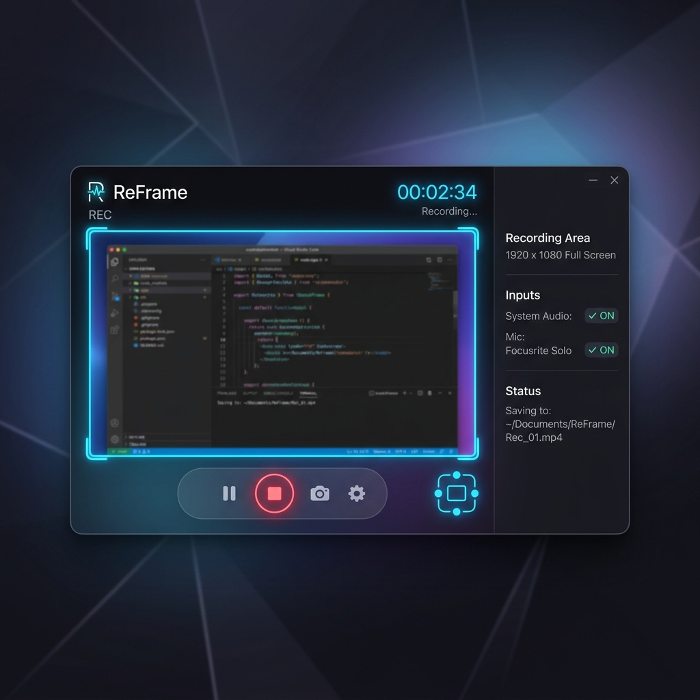

9:16
Live aspect-ratio crop frame
Drag a ratio-locked frame anywhere on your screen — only what's inside is recorded, at the exact output resolution. Switch between 9:16, 1:1, 4:5, 16:9 and 3:4 on the fly.
Drag a ratio-locked crop frame over your screen and capture vertical, square or wide — pixel-perfect, no window juggling. Webcam bubble, multi-source capture, live retake and a built-in editor, all running locally.
A 16:9 desktop never fits a vertical feed. ReFrame solves it at the source — you record the shape you publish, so there's no cropping, no black bars and no re-shooting.
Drag a ratio-locked frame anywhere on your screen — only what's inside is recorded, at the exact output resolution. Switch between 9:16, 1:1, 4:5, 16:9 and 3:4 on the fly.
A draggable PiP — circle, rounded or square — with real-time background removal, split & stack layouts, plus a full-frame selfie mode with zoom and mirror.
Combine up to three screens or windows on a single canvas — auto-tiled, side-by-side or stacked. System audio is taken from the first source to avoid echo.
Fluffed a line? Press K to keep a safe point, R to scrap back to it with a 3-2-1 count-in — all in one continuous take. Discarded spans are skipped automatically on export.
Mic with device picker and a live level meter, system audio, and noise suppression — all mixed together in real time through the Web Audio engine.
Recordings are saved on your machine in IndexedDB and nothing is ever uploaded. Runs in the browser, or as a native desktop app for guaranteed MP4 and system-audio loopback.
Choose 9:16 for Reels & Shorts, 1:1 for the grid, 16:9 for YouTube — and set your output resolution.
Position the ratio-locked crop frame over exactly what matters. Add a webcam bubble or extra screens.
Count-in, record, retake on the fly, trim in the editor, then export to MP4 — or every ratio at once.
No round-trips to a heavy NLE. Trim, cut and caption right where you recorded, then re-export to every format.

DownloadA native build for guaranteed MP4 export, system-audio loopback and a frameless capture experience.
No install required — record & edit right here. Runs 100% locally in your browser.